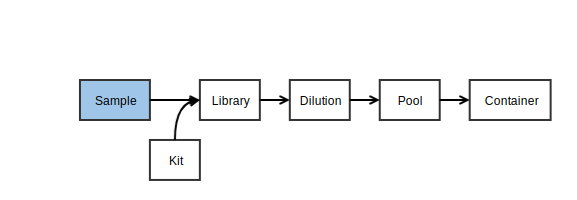
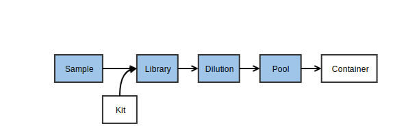

MISO
MISOLibraries tutorial
1. Logging in
You need to log in to MISO LIMS in order to make changes to any LIMS entities. Logging in lets MISO record any changes you make on entities you have access to. If you are a new user and have not been given a username and password, you will first need to get a username and password by following the steps in the Adding Users section.
Try to log in now:
- Click on http://miso.gsi.oicr.on.ca.
- Enter your username (e.g. jdoe) and password and click the Login button.
If all goes well, you should see the MISO Dashboard and see a message at the top right: "Logged in as: jdoe".
2. Propagating samples to libraries
A library is made from one sample for a single target platform and has a specific design associated with it that decides the selection and strategies used to make the library. A library may also have indices (primers/sequencing barcodes/molecular IDs) and QC information.
2.0 Scan samples into your inbox
First, we accept the samples made by the samples team and put them into your inbox.
Boxes hold samples, libraries, and pools. They do not track reagents or primers. Boxes are separated into uses for different kinds of storage (e.g., tissue samples versus extracted DNA), but there is no check that items in a box match. Each box also has a size that includes the physical dimensions of the box as well as whether the box is compatible with the VisionMate scanner. Every position in the box is identified by a standard row letter + column number format (e.g., C05).
In this exercise, we are going to take tissues/samples/libraries from the previous team/collaborator by scanning them out of the previous box and into a newly created 'inbox'.
First, create a new box. This box will be your 'inbox'.
- From the navigation panel, choose Boxes and then Add Box.
- On the Create Box page, enter the information:
- Alias: A short name for the box. Record this name in your worksheet.

- Description: a human description of the box purpose “gDNA ready for
library prep for
”. - Use: The contents of the box. Select an appropriate use for your entities.
- Size: Select
8 x 12 scannable. - Click Save.
Upon clicking save, a graphic of the box will appear.

You can now fill the box with the tissues, stocks, aliquots, libraries, or pools that were made in previous steps. Collect the appropriate matrix tubes/barcodes now.
- Click on a position in the displayed Contents grid.
- Enter a matrix barcode into the Search box on the right and click Lookup. Normally a hand scanner would be used. You can also search for items by their name or alias
- Click Update Position.
- ⚠ The Save button at the top of the page does not work for individual positions, only for Box Information.
- Repeat for as many samples/libraries/pools as you want.
The table below the box diagram shows the position and information for the currently selected sample. If you would like to see all of the samples in the table, click the List all Box Contents button at the top right of the table.
In the lab, it is possible to use Options > Scan Box to use the plate scanner and update all positions at once, but that will not be covered in this tutorial.
Using Boxes
Boxes can be found either from the Sample or Library page or the Boxes page.
- On the Sample page, search for one of your sample or library aliases and click on the alias to load the page.
- The Box and position is listed under Location near the top of the Sample
Information section. Click on the link to go to the Box (e.g.
PROJ_OUTBOX, A03).
Boxes can be used to store Samples, Libraries and Pools and one box can store all three types.
2.1 Bulk propagate samples into libraries
In this section, you will use the samples created already to create libraries.

-
On the Samples page, enter your project name into the search box.
-
Check the samples to turn into libraries.
- Click the Propagate button at the top left of the table.
- Note that "Propagate to libraries" is the title of the box. Choose 1 replicate.
- Click Propagate.
- A table will appear. Enter the library information:
- Library Name: Leave blank as this will be filled in automatically after save.
-
Library Alias: Leave blank as this will be filled in automatically.
-
Description: Library #, e.g.
Library 1 - Platform: Illumina
- Type: Paired End
- Index Kit: Nextera DNA Dual Index
- Index 1 and Index 2: Select any combination of indices you wish. Select different indices for each library. Selecting the same index for two different libraries will it unwise to pool those two libraries together later.
- Kit: Any kit
- Size (bp): 300
- Choose Save.
Note that for dual-index libraries, only the first index needs to be specified. The second is optional.
3. Receiving Libraries
Propagating libraries from samples is only possible if there are existing samples to propagate from, and only makes sense if the libraries were prepared in-house. Libraries may also be received without the samples. The sample information is still required, but it can all be entered in one step.
3.1 Entering received Libraries
- On the left hand menu under Tracking, click Libraries.
-
Click the Receive button at the top of the table.
-
In the dialog, select Quantity: 1, and click Receive
- Select or enter the following data:
-
Sample Alias: enter a sample alias like
PRO1_S#_#. Replace the#symbols with numbers of your choosing. - Sample Type: select
GENOMICfrom the drop-down. - Sci. Name: Homo sapiens
-
Project: Select your project from the drop-down.
-
Date of receipt: select today's date
- Platform: select Illumina from the drop-down
-
Type: select Paired End from the drop-down
- Selection: PCR
-
Strategy: WGS
- Index Kit: select No indices from the drop-down
- Kit: select any option from the drop-down
- Size (bp): 430
- Click Save at the top right
4. Quality control
There are three way to indicate library quality in MISO: 1) Enter quantitative QC values under the Library QC section; 2) The overall pre-sequencing quality flag QC passed; and 3) The post-sequencing quality control Low quality library.
4.1 Library QC
After measuring the insert size or concentration, this information can be entered into each library.
- Select the libraries you wish to edit:
- If you are continuing from the end of the section where you created libraries, do not navigate away from the page. At the top left of the table after saving libraries, click the Add QCs button. Continue to step 2. Otherwise, select libraries using the following:
- On the Libraries page, enter your project name in the search box.
- Check the boxes for the libraries that you created previously.
- Click Add QCs at the top left of the table.
- Enter
1QC per library and click Add. - Date: enter today's date
- Type:
qPCR - Result:
22 - Click Save.
4.2 QC passed
QC Passed is a simple pass/fail flag for a library to decide if it is good enough for sequencing. If not measured, this can be left as "Unknown".
- From the Libraries page, find one of your libraries using the search box and click the sample link.
- Change QC passed from Unknown to True.
- Click Save.
4.3 Low Quality Sequencing
Libraries can be marked as having low sequencing quality, which will be shown after the Run exercises.
5. Scanning libraries into your outbox
Scan the libraries you just created into the outbox for the sequencing team to use.
Finally, update the TUTORIAL_OUTBOX with your samples/libraries/pools to pass them on to the next team or to put them into storage.
Removing and discarding tubes
When you have a position selected, you can also either remove the tube from the box (setting its location to "Unknown") or discard the tube, meaning it has been used up. Discarding the tube sets the volume of the sample to 0 and marks it as "discarded", and removes it from its box.
- Click on one of the positions in the box with a tube. The position, alias, and barcode will appear to the right or below the box graphic. Right-click on the alias and pick "Open in new tab" to load the details page.
- Go back to the Box page in the other tab. Make sure the tube is still selected in the Box and click Discard Tube. Click "OK" in the pop-up.
- Go to the other tab with the Details page and click the browser refresh button. The Location field will show as blank, Volume will be set to 0.0, and the Discarded box will be ticked.
Moving items around in boxes
An item can only exist in one box. If assigned to a new box, it will disappear from the original.
- In the current tab, go to the Boxes page, find the TUTORIAL_OUTBOX box. This box was previously created by the MISO developers for the tutorial.
- Choose an empty position and enter one of your barcodes.
- Click Search and Update Position.
- Go back to your own Box and refresh the page. The sample was removed.
- Repeat this process for the rest of the samples/libraries that you are transferring to the next team.
6. Propagating libraries to dilutions
A library cannot be directly loaded into a lane in a sequencing container (flowcell/SMRTcell) in MISO. A dilution must be made and then many dilutions (or just one) can be mixed into a pool for sequencing.
Orders are requests for sequencing pools a certain number of times. They are used to keep track of sequencing progress for project management and book-keeping.
6.1 Bulk creating Library Dilutions
Dilutions can be made in bulk from libraries.
In this exercise, we will create 4 library dilutions from the libraries we made previously.
- On the Libraries page, check all the libraries just created.
- From the toolbar, select Make dilutions.
- Note that the Make dilutions option is also available after bulk creating or bulk editing libraries.
- Enter the dilution information:
- Conc.: (use any number you wish)
- Creation Date: (use the current date)
- Click Save.
7. Creating Pools
Pools are the last step for libraries before sequencing and represent the entity that is loaded onto the flowcell lane or SMRTcell. A "pool" can have one or more library dilutions in it. Every lane of sequencing contains only one pool.

7.1 Bulk creating a Pool
Here we will pool all of the dilutions we added previously to make a single pool of 4 dilutions.
- Select the dilutions you wish to pool:
- If you are still on the bulk dilutions page from section 5.1 do not navigate away from the page. Continue to step 2. Otherwise, select dilutions using the following:
- On the Dilutions page, select the dilutions created.
- From the toolbar at the top left, click Pool Together.
- Enter the pool information:
- Alias: A short description of the pool contents. Enter the project name
followed by
_POOL(e.g.PROJ_POOL) - Description: A longer free-text description of the pool.
- Creation Date: Select a date.
- Concentration: Enter a concentration.
- Volume: Enter a pool volume.
- Ready to Run: Whether or not the pool is ready for sequencing. This flag is used together with the Order to show the pool is ready to be sequenced. Make sure this is True.
- Alias: A short description of the pool contents. Enter the project name
followed by
- Click Save.
8. Ordering sequencing
Orders are created on the pool to be sequenced, and include the quantity of sequencing required (counted in lanes/SMRT cells), and the sequencing chemistry required (on Illumina).
8.1 Creating an Order
- Select the pools you wish to create orders for:
- If you are still on the bulk pools page from section 6.1 do not navigate away from the page. Continue to step 2. Otherwise, select pools using the following:
- On the Pools page, select the pool you just created.
- From the toolbar, click Create Order:
- Select the instrument for sequencing:
NextSeq 550 - Fill in the new order box:
- Sequencing Parameters: Select
High 2×151chemistry. - Lane Count: the number of lanes that should run for this pool. Enter
2.
- Sequencing Parameters: Select
- Click Save.
- Click on the pool you just added an order to.
- The order will now be visible in the Requested Orders section.
- The outstanding sequencing required will be visible under Order Status.
The language will vary depending on the platform (i.e., PacBio containers will show SMRTcell Count instead of Lane Count).
8.2 Checking for unfulfilled orders
The Orders page is used to decide what needs to be sequenced.
- From the navigation menu, choose Orders.
- Verify that the pool you just created is listed in the Active tab.
Columns on this page will disappear if there are no entries (e.g., the Failed column will not be shown if there are no failed runs). When enough lanes have been sequenced, the row will disappear from the Active tab, but remain in the All tab. Lanes currently being sequenced will be marked as in-progress and remain on the Active tab until the run transitions to Completed.
A pool can have many orders. Orders for the same platform and chemistry are summed when displayed on this page.
Troubleshooting
How do I correct an index on a library?
The index can be changed on either the individual library page or the bulk edit page.
- From Tracking, Library, select the library that needs to be changed.
- If necessary, change Index Family. If selected, the indices will be erased.
- Select the correct index under Indices. If the index family supports dual barcoding, another drop down will appear.
What if I forget to put a library dilution in a pool?
If the library dilution has not been created:
- From Tracking, Library, check the library that needs to be added.
- From the toolbar, click Make Dilution.
- Fill out the new row in the table, then click Save.
Once the dilution exists:
- From Tracking, Pool, select the pool that needs the additional library dilution.
- In the Available Dilutions section, enter the library name, library alias, or dilution name in the Search box.
- Find the correct dilution in the list and check it.
- Click Add on the toolbar.
How do I make bulk orders?
Making orders in bulk require the order be consistent for all pools.
- From Tracking, Pools, select all the pools needing an order.
- Click Create Order, and enter the information as for a single order.
A new order will be create for each pool with the same information.
| < Samples tutorial | Home | Sequencing tutorial > |